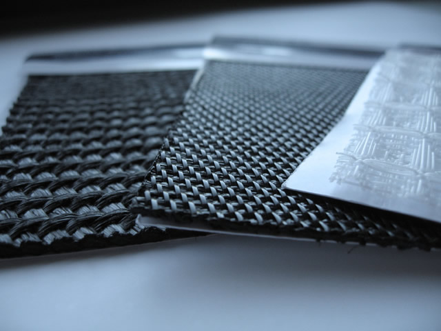

Woven Geotextile Fabrics and Landscape Fabrics
Woven Slit Film | Heavy Weight Woven | Monofilament
Woven geotextile fabric products are much stronger than non-woven fabrics. They are ideal for use in situations where resistance to stretching and maintaining the fabric's original shape is important.
Woven geotextile fabrics have outstanding load distribution and water filtration capacity.
These woven geotextile fabrics separate soft soils and harder aggregate granular base materials extending the life of both paved and unpaved roadways by reducing rutting.
In addition, using heavy-duty fabrics can help save significant money on projects by reducing the thickness of the sub-base required.
Fabric Weights
Our woven geotextile fabrics are available in rolls with standard roll widths of 8', 12'6" and 15'. Rolls of our geotextile fabric can be custom cut to your specific width requirements. In addition, we offer a wide of in-stock geotextile fabric weights.
- 3 oz/sq. yd.
- 3.5 oz/sq. yd.
- 4 oz/sq. yd.
- Heavier weight fabrics products readily available. Please ask.
Fabric Types
We carry a wide variety of in-stock fabrics to suit your application.
- Woven Silt Film
- Heavy Weight Woven
- Monofilament